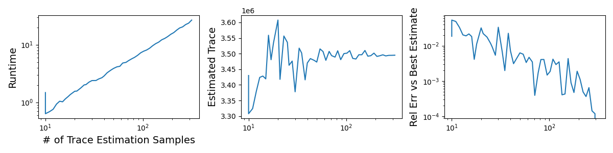
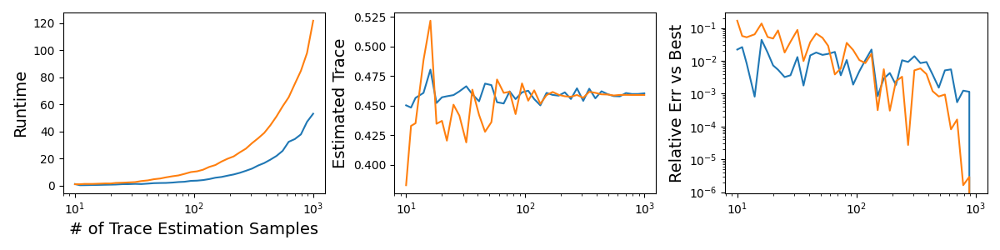

Efficient NTK Metrics for General Recurrent Models
This blog post explores computing NTK metrics efficiently for recurrent models, using the operators in our pre-print here. Find related code in my package.
Background
Here, I'll briefly describe the mathematical preliminaries. For a more detailed introduction, see the Appendix of the pre-print above.
The aim is to train a dynamical system to minimize some loss over a set of trainining inputs. Every quantity considered thus has a time axis, \(t\), which we assume is in a fixed window \(t \in [0, t_{end}]\) for simplicity. Specifically, we are given a training set \(X\) consisting of inputs for each trial \(x(t) \sim X\). The model has hidden state \(z(t, x)\) on trial input \(x\) and at time \(t\), with dynamics given by a parameterized ODE: $$\frac{d}{dt} z(t,x) = f(z(t,x), t, x, \theta); \, \, \text{ where } z(0, x) = z_0.$$ The parameters are \(\theta\), which evolve according to Gradient Descent (GD), as below. All trajectories have initial condition \(z_0\) for simplicity. The function \(f\) thus describes the tangential flow of the model dynamics.
Given this setup, there is assumed to be a loss function \(\ell(z(t,x))\) quantifying how far we are from some objective (typically involving a target \(y^*(t, x)\) for supervised problems, along with output weights). The goal is to minimize the average loss over all time and trials: $$\text{ Goal: } \, \arg \min_\theta L := \arg \min_\theta \langle \ell(z(t,x)) \rangle_{t,x},$$ where \(\langle \cdot \rangle_{t,x}\) denotes averaging over \(t, x\). To solve this problem, we can use GD, evolving \(\theta\) along the steepdest descent direction in parameter space. I.e., we incrementally perturb the parameters by: $$\delta \theta = -\nabla_\theta L.$$ When we take infinitesimal steps along these updates, we define the so-called gradient flow of the parameters, \(\theta\).
However, it is useful to consider the gradient flow of other quantities, since the parameters are ultimately a proxy for the model dynamics themselves. For example, we can investigate how the model state, \(z(t,x)\), evolves under GD. Technically, this quantity is a tensor over all trial inputs, \(x\), times, \(t\), and hidden units. In the discrete setting with B = # of batches, T = # of timesteps, H = # of hidden units, then \(z\) is a three-tensor of shape [B,T,H].
We let \(\mathbb{T}\) denote the space of all such tensors (discrete or continuous) throughout. As in my paper, there are two linear operators, \(\mathcal{P}, \mathcal{K} :\mathbb{T} \rightarrow \mathbb{T}\), such that $$\delta z = \mathcal{P K P^*} (\text{Err}),$$ describes the flow of error corrections, \(\text{Err} = \nabla_z \ell\), to perturbations \(\delta z\), i.e. the hidden state GD flow. The operator \(\Theta := \mathcal{P K P^*}\) is thus a more-general anologue of the Neural Tangent Kernel (NTK) for recurrent dynamical systems. Classically, the NTK describes evolution of the output of a neural network with a scalar output and no notion of time, so it is a matrix over batch trials. In our case, however, the NTK is an operator on tensors in \(\mathbb{T}\), of shape [B, T, H] when discretized, i.e. it is a linear operator on three-tensors.
Motivation
Prior work has used the NTK to quantify rich versus lazy learning. Rich learning occurs when the hidden state representation changes a lot after we train the model with GD. This can be summarized basically as: $$\text{ NTK Changes a Lot } \Rightarrow \text{ Rich Learning}; \text{ NTK Basically Constant } \Rightarrow \text{ Lazy Learning}.$$ For example, for feed-forward neural networks, it has been shown that when the number of hidden units goes to infinity they fall into the lazy regime, where the NTK is completely static throughout training.
To quantify this, we define the NTK alignment as in this paper Equation 6. Letting \(\Theta_0, \Theta_f\) denote the operator \(\mathcal{P K P^*}\) before and after GD training on a recurrent model, the alignment is given by: $$\text{KA}(\Theta_0, \Theta_f) = \frac{\text{Tr}(\Theta_0^* \Theta_f)}{\sqrt{\text{Tr}(\Theta_0^* \Theta_0) \text{Tr}(\Theta_f^* \Theta_0)}},$$ where Tr computes the trace of the linear operator. Note that when, for example, [B, T, H] = [100, 90, 256], which is a very small network with very few batches, the discretized operator \(Theta\) can be seen as a matrix with 2,304,000 rows and columns! In this article, I will focus on efficiently computing this expression.
Naive Approach
Naively, we can explictly compute \(\Phi\) as an outer product of parameter derivatives. In particular, \(\Phi\) is a tensor-product of the all parameter derivatives of the hidden state, \(z\). We can thus construct it as follows: $$J_\theta[b, t, i] := \text{autograd}(z[b, t, i], \theta).$$ This is a tensor of shape [B, T, H, M], assuming there are M parameters. Then, \(\Phi\) is a six-tensor of shape [B, T, H, B, T, H] defined by $$\Phi[b_0, t_0, i_0, b_1, t_1, i_1] = J_\theta[b_0, t_0, i_0]^T J_\theta[b_1, t_1, i_1].$$ It is clear that this approach is super inefficient. Naively, this will require B * T * H evaluations of autograd to form the parameter Jacobian.
However, if we are interested in small problems and consider objects other than the state \(z\), it can be feasible. For example, in Helena Liu's paper above, the NTK of the output of the network at the final timestep is considered. This operator is much smaller than the NTK of the state at every single timestep. In that case, the Naive approach can be used, as in her code, which I'll reproduce here:
Naive Approach:
J = [] # J_theta, parameter jacobian [B*T*H, M].
for b in range(batch_size):
for t in range(time_size):
for k in range(hidden_size):
J_i = torch.unsqueeze(torch.autograd.grad(hidden[b,t,k], \
net.params, retain_graph=True)[0], dim=0) # net.params is a length M vec.
J.append(J_i)
J = torch.stack(J, 0)
Theta = J @ J.T # Form the NTK Theta Matrix.
Matrix-Free Approaches
The Naive approach explictly computes \(J_\theta\), which is very intractable, both in memory and compute. In the following sections, the methods introduced are matrix-free, relying only on applications of the operator \(\Theta\) to specific vectors, never actually computing it explictly.
Preliminary: Computing Actions with VJP and JVP
As in this tutorial, this action can be efficiently computed using built-in pytorch (or jax) functionality: vjp and jvp. Specifically, vjp (Vector-Jacobian Product) takes in a tensor of shape [B, T, H] and returns a quantity in the parameter space of shape [M] (in reality the parameters are typically a named dictionary, which we can vectorize to make a vector). In particular, assuming \(J_\theta\) has flattened shape [B*T*H, M] and \(v\) has shape [B*T*H], then $$\text{vjp}(v) = J_\theta^T \, v.$$ Similarly, jvp (Jacobian-Vector Product) takes in a quantity, \(\phi\), which is a vector of shape [M] in the parameter space, and outputs a quantity of shape [B*T*H]: $$\text{jvp}(\phi) = J_\theta \, \phi.$$ These operations actually implicitly compute the products using automatic differentiation, without forming \(J_\theta\). Firstly, vjp uses backwards-mode automatic differentiation, i.e. backpropagation, while jvp uses forward-mode automatic differentiation, which is more memory intensive.
Hutch++ and Nystrom++
In my code, I implement the linear operators \(\mathcal{P}, \mathcal{K}\) as classes that can be converted into scipy LinearOperators. To compute the NTK alignment, it is necessary to compute the trace of three operators. The denominator operators are positive semi-definite and given by \(\mathcal{(P_0 K_0 P_0^*)^2}, \mathcal{(P_f K_f P_f^*)^2}\). The numerator operator measures the inner product between the first and final NTK: \(\mathcal{P_0 K_0 P_0^* P_f K_f K_f^*}\). For the numerator, which may not be PSD, I computed the trace of the operator using Hutch++. For the denominator terms, which are PSD, I used the Nystrom++ algorithm, which builds on Hutch++ incorporating the PSD assumption.
Hutch++ builds on the standard Hutchingson-trace estimator by speeding up compute for potentially low-rank operators. I have found that the NTK operator is often low-rank, as in my pre-print above. Note that the trace of a square \(n\)-by-\(n\) matrix \(A\) can be expressed as $$Tr(A) = \sum_i q_i^T A q_i = Tr(Q^T A Q),$$ for any orthonormal basis \((q_i)_{1\leq i\leq n}\) of \(\mathbb{R}^n\). The idea of Hutch++ is to find a good choice of random \(\hat Q \in \mathbb{R}^{n \times k}\) that accounts for all the variance in \(A\). In other words, we choose \(k\) vectors such that $$Tr(A) \approx Tr(\hat Q^T A \hat Q).$$ Note \(\hat Q^T A \hat Q\) is a \(k\) by \(k\) matrix, which may be very small. If \(A\) is effectively a low rank matrix (or linear operator), we can thus transform the problem of finding its trace into taking the trace of a small, \(k\) by \(k\) empirically computed matrix.
Hutch++:
def trace_hpp(A, nsamp):
d = A.shape[0]
S = torch.randint(2, size=(d,nsamp)).to(float) * 2 - 1 # Either 1 or -1
G = torch.randint(2, size=(d,nsamp)).to(float) * 2 - 1 # Either 1 or -1
Q, _ = torch.linalg.qr(A @ S)
B = G - Q @ (Q.T @ G)
return torch.trace((A @ Q).T @ Q) + (1./nsamp) * torch.trace((A @ B).T @ B)
Results
Below, I measured the runtime and estimates of the Hutch++ estimator described above. The third panel compares the relative error of each estimate versus the final estimate. It takes about 1 second with 10 samples and 25 seconds with 300 samples.

Optimizing Cosine Alignment
The term I'm really interested in is the NTK cosine alignment, which involves the trace of \(A^T B, A^T A, B^T B\), for operator \(A, B\). The biggest bottle-neck by far is the application of the operators, which involves a complex vjp, jvp forward-backward autodiff calculation. The naive approach is to compute three traces using Hutch++ above, which does decently well. However, I decided to try design an algorithm that accounts for the redundancy.
Let \(A, B\) by \(n\) by \(n\) and \(S\) be an empirically sampled matrix of shape \(n\) by \(d\) with random orthonormal columns. Compute \(A S, B S\). Then, we can estimate the trace of \(A^T A\) by the expect value of the squared norm of the columns of \(A S\): $$Tr(A^T A) \approx n \mathbb{E}_{i} [\| A s_i\|^2].$$ Likewise we can estimate the trace of \(B^T B\). Finally, $$Tr(A^T B) \approx n \mathbb{E}_{i} [\langle B s_i, A s_i\rangle^2].$$ Note that using the consistent matrix skecth \(S\) throughout also correlates the errors and can help reduce the variance of this estimator. Below is the code I used in my package, which you can find here. It uses pytorch, allowing for possible GPU acceleration (which I haven't tested) and my Operator implementation in that package.
Final NTK Alignment Implementation:
def op_alignment(A, B, nsamp=20):
A_flat = A.flatten() # Flatten input and output shapes.
B_flat = B.flatten()
d = A_flat.shape_in
G = torch.randn(d, nsamp)
Q, _ = torch.linalg.qr(G) # Random orthonormal vectors.
S = (d / nsamp)**0.5 * Q
AS = A_flat.batched_call(S.T).T
BS = B_flat.batched_call(S.T).T
return torch.sum(AS * BS) / (torch.sum(AS * AS) * torch.sum(BS * BS))**0.5
In total, we get about a three times faster estimate with comparable accuracy, as summarized below.

Summary
In summary I made an efficient estimator of the NTK alignment metric to compare how the NTK of a model at different points during GD training compare. I found that using Hutch++ was fast and accurate and simple to implement. However, I found that, due to redundancy in the cosine similarity expression, we can improve on this by about a factor of three in runtime.
With this code, I found that comparing NTKs with [batches, timesteps, hidden size] = [100, 10, 128], i.e. 128,000 by 128,000 NTK operators, takes about 0.33 seconds with 50 estimator samples, which gives a relative error of below about 1%. With such an efficient estimator, it may be possible to practically use this NTK comparison during training, but I'm not sure how or why yet. For now, it allows my collaborators and I to efficiently compare trained models very fast.